A taxonomy of personal information on social networks
An introduction to disclosure control in social networks
It is not an exaggeration to say that social networks have transformed the overall Internet landscape! Social
networks have affected the way people communicate, are being informed or even make business online. An issue
that is
sometimes overlooked though is the exposure of personal information through the social networks. Participation
at a
social network means that a certain amount of data related to the user is accessible from a) other social
network
users and b) the social network service itself. The disclosure of specific types of information may pose serious
threats to the users though. A relevant example that has attracted considerable attention is a
tool that analyzes Twitter accounts in order to identify the physical
location of their owners, unveiling a potential vulnerability of the users' residence. In other cases,
information
about the gender, age, ethnicity, political or religious beliefs, sexual preferences, and financial status of a
person have been used for unjustified discrimination, for instance, in the context of personnel selection and
for
loan approval and pricing based on social media profiles. Within the Databait tool, risks associated with the
disclosure of different types of information are shown through the disclosure scoring framework when you hover
over
the nodes of the different dimensions and attributes.
It is interesting to note though that people's attitude towards information disclosure differs significantly.
For
instance,
[Knijneburg]
identifies
three main classes of users with respect to the level of information disclosure in OSNs:
- Privacy fundamentalists
- Pragmatists
- Unconcerned
Privacy fundamentalists avoid to share any content at all at the social network, pragmatists do share content
but
are careful about the content that they share and unconcerned users post anything without considering privacy at
all. Clearly, unconcerned users have the highest risk; however, pragmatists also run risks. In fact, it appears
that
most users, regardless of their attitude towards privacy, seem to have difficulties managing their information
disclosure. For instance, in a seminal study by
[Madejski], 65 users were
asked
to look for any sharing violations in their OSN profiles, that is to find cases in which they shared content
with
people that they really would not like to. Indeed, all 65 users found that they had at least one sharing
violation.
[Acquisti] attributed this behaviour to
incomplete information, bounded cognitive ability and cognitive and behavioural biases, which may be caused by
difficult to find settings and opt-out defaults. This is where Databait comes to play and attempts to assist
users
in taking appropriate decisions about controlling their presence at a social network.
One of the tools provided by Databait for raising awareness regarding information disclosure and assisting the
user to adjust their present online is a list of suggestions for particular pieces of content the sharing
settings of which you may need to reconsider. Please note though that due to Facebook API constraints, the
Databait application is not allowed to make direct changes to your sharing settings, and therefore the
suggestions, if you decide to follow them will need to be applied directly to Facebook, rather than through
Databait. Complementary to the tools provided by Databait, in the following, we provide a tutorial for assisting
the users to control their presence at the social network. The first part of the tutorial provides some
theoretical introduction about the different types of personal data that is shared on social networks, as well
as about some legal issues that are related to the duties of OSN providers as well as the rights of the users.
Building on the legal discussion, we also look at the profiling that is made by Facebook. Subsequently, the
second part of this tutorial discusses in detail the sharing options and tools offered by Facebook for managing
privacy. The hope is that this tutorial, in conjunction with the tools offered by Databait, will substantially
assist users to better control their presence at the social network.
A taxonomy of personal information on social networks
An introduction to disclosure control in social networks
Legal considerations: duties of OSN providers and rights of users
A taxonomy of personal information on social networks
Before looking at practical details and guidelines for controling disclosure settings, we first discuss a number
of issues that are important to assist the user to better perceive the disclosure of their information through
the OSN. We start with presenting a taxonomy of user data in social networks. This taxonomy considers the source
of data about a user, rather than the type of personal information (as e.g. in the disclosure scoring
framework). This will allow us to distinguish between different levels of privacy and to identify the limits to
which a social network user can control the disclosure of their information. The taxonomy has been defined by
[Schneier]. Briefly,
Schneier identifies the following six categories of OSN data:
- Service data. This is the set of data that a user explicitly provides to the OSN service. In many
cases, this includes the user’s legal name, age, gender, etc.
- Disclosed data. This includes the content (messages, status updates, photos, etc.) posted by the user
to his own page.
- Entrusted data. This is the content posted by the user to the page of another user. It is similar to
disclosed data, with the difference that, in many cases, the user does not have full control of the
content, but some other user does.
- Incidental data. This is the content posted about the user by some other user (e.g. when a friend of
the user posts a picture depicting the user). Again, this is similar to disclosed data, but again, the
user does not have control of the content.
- Behavioural data. This type of data includes the actions of the user in the OSN. For instance, this may
include information about which profiles the user visits, what games s/he plays, what pages s/he likes,
etc.
- Derived or inferred data. This is data about a user that may be derived from all other types of data,
typically by means of algorithmic processes. We will also refer to such kind of data as inferred or
inferences.
Schneier's taxonomy identifies that the level of control a user has over the data that concern him/her may vary
significantly depending on the above categories. For instance the user typically has full control over the
personal details that he/she explicitly provides to the social network in order to register with the service
(service data) and that he/she deliberately posts to his/her profile (disclosed data). On the other hand, the
user's control is limited over data that he/she posts on other people's profiles (entrusted data), data about
him/her that is posted from other users (incidental data) and that that has resulted from analysing other data
(derived or inferred data).
Based on the above, it is useful to make the following remarks:
- Social network users typically focus on disclosed data and often on entrusted and incidental data.
Nevertheless, other types of data are also important for privacy; in particular, inferred data
are very likely to disclose potentially sensitive information. Within Databait, there is a particular
focus on inferred data. That is, within the disclosure scoring framework, the user can examine the
different types of information that can be inferred about him/her. It should be kept in mind that these
inferences come with some uncertainty due to the statistical nature of the related inference models.
Nevertheless, even in an application of this scale, the accuracy of the inferences is on average quite
accurate and suffices to show the scope of possible inferences.
- The social network service typically has access to all those types of data. In fact, one can identify
two different types of privacy: social privacy, where privacy concerns the disclosure of information to
the other users of the social network, and institutional privacy, where privacy concerns the
disclosure of information to the social network service itself. It is also important to note that the
inferences that can be made by the social network service are much more elaborate and accurate than
those offered by Databait, as the social network service has access to a much larger pool of data that
it can use to base its predictions on. Additionally, it is important to note that the social network
service typically does not seem to forget any data, even when the users delete it. Therefore, it is
important to consider before posting anything that data never really completely disappears from a social
network.
- Behavioural data may disclose much more information than one may initially think of and much more
than other types of data. Behavioural data are typically not observed by third parties, only by the
social network service. It should be noted that there are clear indications that the service utilizes
this data, nevertheless, it is unclear exactly how.
An introduction to disclosure control in social networks
Legal considerations: duties of OSN providers and rights of users
A taxonomy of personal information on social networks
User profiling by Facebook
Legal considerations: duties of OSN providers and rights of users
How can users of online platforms know what can be inferred from their online disclosures and behavior, who has
access to this information and how it can be used commercially and otherwise? According to EU data protection
law, providers of online services who process information relating to individuals have all kind of duties. These
duties include, for example, that a data controller only collects and processes data based on one of the legal
grounds listed in Art. 6(1) GDPR 2016/679 (for example, a legitimate interest of the controller that is not
overruled by user interests, explicit user consent or a contract the user that necessitates processing), that
she does not process data in a way that is unforeseeable (that is, incompatible with the specified, explicit and
legitimate purposes set out at the moment of data collection), that she keeps the data safe, secure and
up-to-date, and that she deletes them as soon as they are no longer necessary. Data controllers also have
certain informational duties (see Arts. 12-15 GDPR 2016/679) with regard to their users when they process their
data. These informational duties include providing some basic information at the time of data collection (e.g.,
purpose for collecting the data, contact details of the data controller, persons to whom the data may be
disclosed, indication when the data will be deleted, existence of the right of access and rectification) and the
duty to provide access to the data upon a user’s request. When data processing includes profiling of users,
these informational duties also entail that the data controller has to inform users about the fact that they are
subjected to profiling and provide “meaningful information about the logic involved, as well as the significance
and the envisaged consequences of such processing for the data subject”.
A taxonomy of personal information on social networks
User profiling by Facebook
Legal considerations: duties of OSN providers and rights of users
Sharing settings basics
User profiling by Facebook
In this section we attempt to look at the user profiling that is done by Facebook. Often users have a very vague
idea of this and in the following we attempt to clarify a few things about it.
During the last few years one can see that large internet companies like Facebook or Google make increasing
efforts in their experimentation with various ways of informing users about why they see certain advertisements.
So, from late 2014 onwards, Facebook has been experimenting with the provision of information in two formats: in
an informational section about the users advert preferences and in informational pop-ups linked to
advertisements shown to users. The exact content of both formats changes frequently – probably because it is
still in the experimental trial-and-error stage. At the time of writing (August 2016) the content of these two
sections is the following:
- Facebook's informational section about the users advert preferences. This section (see figure
below) contains general information about the way advertisements are targeted at the user, a 'your info'
page (which invites the user to update and extend her profile information), a list of advert preferences
('interests'), and a list of advertisers with the user's contact info.
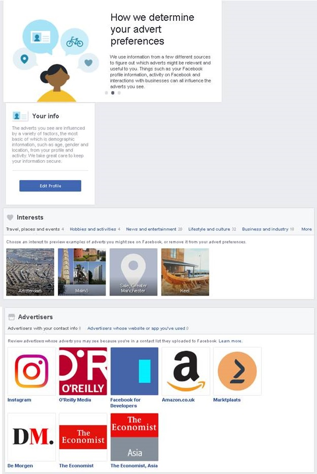
Figure 1. Facebook's informational section about the users advert preferences
It goes beyond the scope of this tutorial to look in detail at each of these subsections. However, in
relation to DataBait it is particularly interesting to take a close look at the list of advert
preferences. Each user can now inspect (and adjust) the list of the advert preferences that Facebook
attributes to her (next figure).
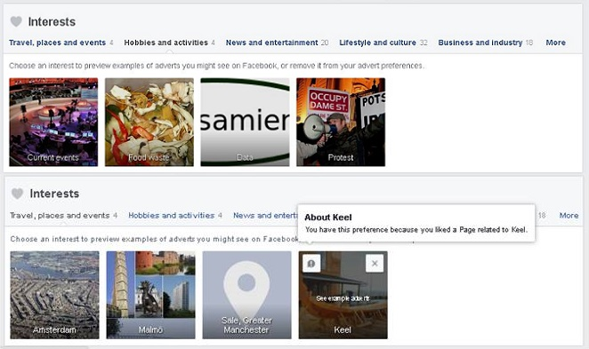
Figure 2. Two examples of sub-lists ('Hobbies and activities' and 'Travel, places, events') from the
complete list of the advert preferences ('interests') that Facebook attributes to a user. When clicked,
each interest comes with a possible explanation as to why Facebook attributes this interest to the user
(see the pop-up 'About Keel', in the lower left corner).
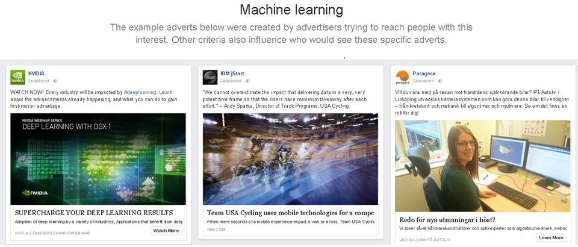
Figure 3. Facebook offers examples of advertisements that could be shown based on an interest.
Each interest (e.g., 'Protest', 'Wifi Connection', 'Park' or 'Away from hometown') comes with some
examples of advertisements that could be shown based on it (figure 3) and an explanation (figure 2) as
to how it was inferred. Examples of such explanations:
- 'Protest: You have this preference because you liked a Page related to Protest'
- 'Wifi Connection: You have this preference because we think it may be relevant to you based on
what you do on Facebook'
- 'Park: You have this preference because you clicked on an advert related to Park.'
- 'Away from hometown: You have this preference because we think it may be relevant to you based
on what you do on Facebook'
The explanations are both illuminating as well as opaque. It is illuminating to know that my profile for
advertisements contains inferred interests such as 'Protest', 'Wifi Connection', 'Park' or 'Away from
hometown'. It is also illuminating to know that the inference of some of these interests is based on
likes, others on advertisement clicks and others on 'what you do on Facebook'. However, not all of these
explanations make it easy to trace the attributed interest back to the actual behavior that caused the
attribution. This is particularly clear with an explanation like 'based on what you do on Facebook' –
which is very general. The explanation 'because you clicked on an advert related to Park' is also
difficult to relate to actual behavior: a user might not remember clicking on an ad, nor think of this
ad as relating to 'Park'. The explanation 'because you liked a Page related to Protest' is a little
better, because a user can inspect her list of likes and guess which of these likes is qualified as
being related to 'Protest'. Still, guessing which liked page qualifies as related to protest is not
necessarily very obvious. Is it the like for a page that advocates diminishing foodwaste? Or the like
for a page that is critical of unrestrained surveillance and data collection? Or some completely
different like?
- Facebook's informational pop-ups linked to advertisements shown to users. Facebook gives some
additional information about the logic of targeted advertisements in the way shown in figure 4. It is
only when users hover over the portrayed ad that a cross appears in the upper right corner. If a user
would then click on this cross, then they are shown three options (see figure 4).
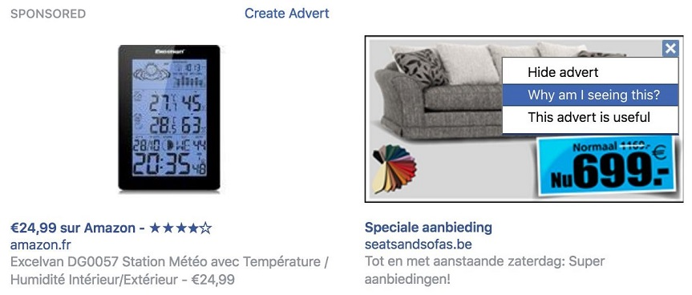
Figure 3. Facebook offers a (slightly hidden) button on top of each displayed advertisement that offers
some information as to why a user is presented with it.
It is only when users click on the second option ‘Why am I seeing this?', that they are informed of
possible reasons for seeing this ad:
- One reason why you're seeing this advert is that Seats and Sofas België wants to reach
people who were recently near their business. This is based on information from your
Facebook profile and your mobile device.
- There may be other reasons why you're seeing this advert, including that Seats and Sofas België
wants to reach people aged 25 to 64 who live near Mechelen, Flemish Region. This is
information based on your Facebook profile and where you've connected to the Internet.
The first explanation is quite straightforward, the second one includes an interesting caveat ('There
may be other reasons you saw this ad'). While Facebook informs, it still does not refer to the data that
actually linked this ad to a particular user, it only refers to possibilities.
Legal considerations: duties of OSN providers and rights of users
Sharing settings basics
User profiling by Facebook
Creating friends' lists
Sharing settings basics
In the first part of this tutorial we looked at a number of issues related to information disclosure on OSNs.
This included a taxonomy of types of data shared on OSNs as well as some legal aspects of information
disclosure. In the second part of the tutorial, in this and the next sections until the end of the tutorial, we
look at the tools and options offered by Facebook for controling information disclosure. In this section in
particular, we start with the very elementary options that a offered. The figure below shows the box that
appears
at the top of a Facebook user's profile and that allows users to
post new content.
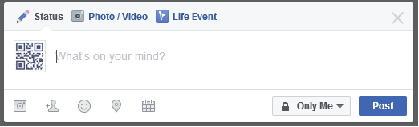
Please note that the user can post three different types of data depending on which tab of the box is selected:
status, photo / video or life event. Particularly important for privacy are the following options:
- By clicking on the 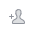 icon, the user can tag other users. By doing this, the
user directly provides information about other users. Of course, the user that has been tagged can
remove the tag; however, it should be clear that disclosure of our information may sometimes be out of
our control, since other users can share information about us.
- By clicking on the 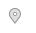 icon, the user can provide his / her location.
This action explicitly provides potentially sensitive information about the user. It is often the case
also that posts are automatically tagged with location information, regardless of the fact that the user
may not have explicitly provided it.
By clicking on the drop down list next to the post button, the user can set the audience that will have access
to the shared content. The options are: public, friends, only me and custom. It is important to note that
selecting one of these options, also changes the default option for future posts. In the 'custom' option, the
user can explicitly define which of his friends to share or not to share the content with (please see the next
figure).
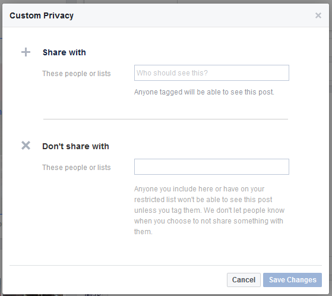
Before posting some content on a social network it is important for a person to ask himself the following
questions:
- Is the content I am about to share sensitive or reveals any information about me that I am not be very
comfortable about making public?
- Who will be able to see this data? In fact, it is useful for a user to, once in a while, examine their
list of friends. This wil make them to better perceive their audience. Managing friends is an important
issue that we will come back to in the next section.
It is also important to know that privacy settings can also change after some piece of content has been posted.
This is shown in the next image.
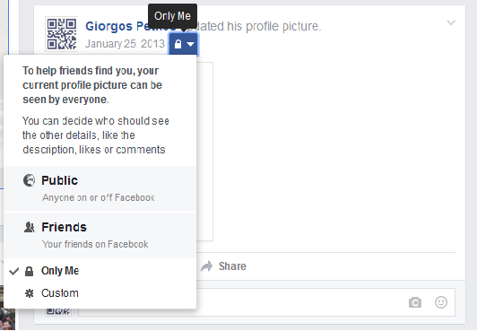
User profiling by Facebook
Creating friends' lists
Sharing settings basics
Managing the disclosure of your profile info
Creating friends' lists
As mentioned in the previous section, when setting the audience for some new or existing piece of content, the
user can define a custom set of users that consists of either a newly defined set of users or a previously
defined list of users. Indeed, users can group their friends and create lists of friends, according to the type
of relationship that they have with them. This can be done by clicking on the 'friends' link that can be found
on the left column of their news feed as shown in the following figure.
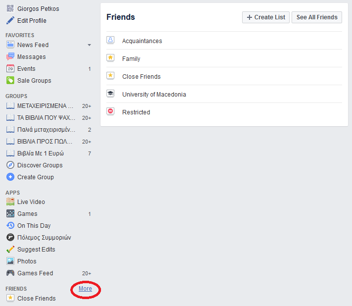
From there, the user can manage their friends lists, e.g. the following figure shown the interface for creating
a new list.
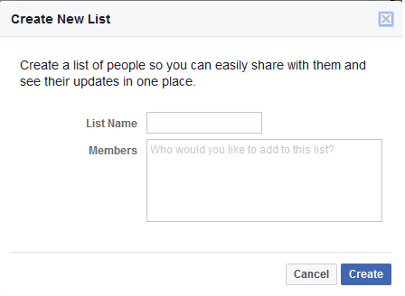
Friends lists are a very powerful tool that allows the user to simplify the task of defining their sharing
settings. Moreover, friends' lists allow the user to better perceive their audience. That is, by grouping the
audience in meaningful sets, it is easier to figure out if some content should not be shared with some other
friend.
Sharing settings basics
Managing the disclosure of your profile info
Creating friends' lists
Images privacy
Managing the disclosure of your profile info
Apart from the disclosure of information through posted content, users also often provide explicit profile
information to the social network service that is sometimes disclosed without the user being aware of it. This
includes information, such as their mobile phone number, their education, the members of their family, etc.
Sometimes also, such information is provided by other users. Nevertheless, the user may prefer to avoid sharing
such information. In order to change the sharing settings of profile information of their profiles, users must
go to the 'about' section of their profile. As shown in the following image, the different parts of the profile
of the user are listed on the left.
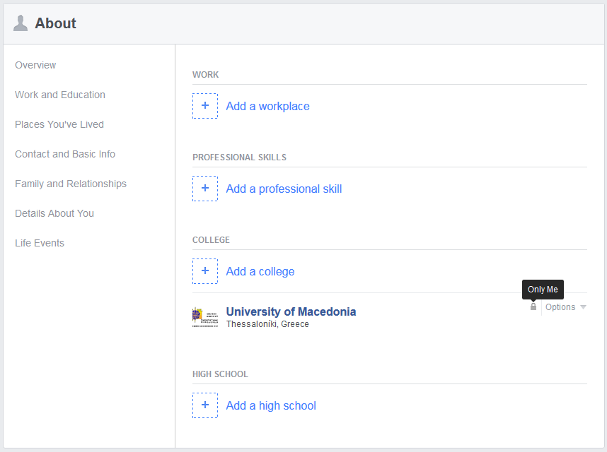
The user can then select each category, examine the information under it and change the sharing settings. In the
example shown in the image above for instance, information about the college attended by the user is only
visible to him / her.
Creating friends' lists
Images privacy
Managing the disclosure of your profile info
Examining the activity log
Images privacy
Sharing settings of images in Facebook is also straightforward but has a couple of caveats. The basic point is
that photos privacy can be controlled on a per album basis, that is, the user can define sharing settings
similar to those of posts for each of their photo albums.
One first caveat is that the profile image is always public. This is shown in the following image, in which it
is mentioned that adjusting the audience of the profile image does not change the privacy settings of the image
itself, it just changes the access to the comments, likes and description of the image (the image itself is
always public). The same holds for the cover photo at the top of the page.
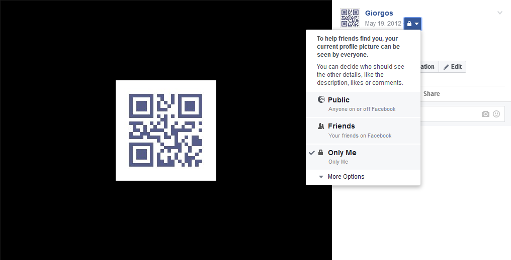
Nevertheless, the user can change the privacy of all other photos in the 'Cover photos' and 'Profile Pictures'
albums.
Moreover, unlike other photo albums you create, you can choose an audience for individual photos in your
Timeline Photos and Mobile Uploads albums. Each time you post a new photo, you choose who sees that photo using
the audience selector.
Managing the disclosure of your profile info
Examining the activity log
Images privacy
View profile as
Examining the activity log
In this and the following sections, we look at some tools offered by Facebook that assist the definition of
sharing settings. The first one is the activity log that summarizes recent activity by the user. In order to
access it, click on the 'Privacy Shortcuts' icon at the main menu at the top of the page, as shown on the
following picture.
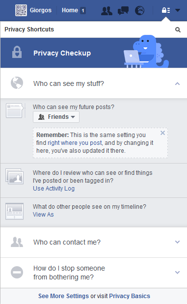
When clicking on the activity log link, the user is shown a list similar to the one shown in the next figure,
through which the user can control if the relevant activity will be shown on the user's timeline or not.
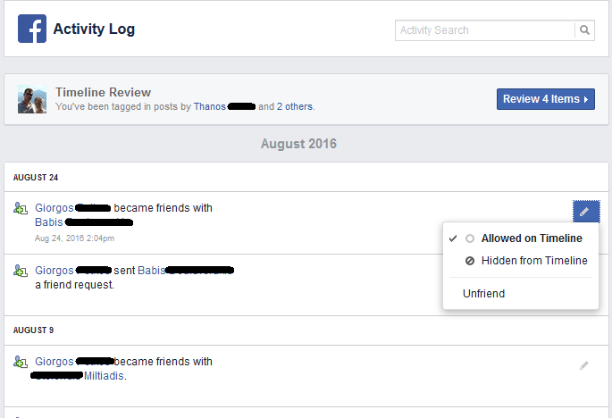
Images privacy
View profile as
Examining the activity log
Blocking other users
View profile as
Another very useful tool that is offered by Facebook allows the users to examine their profiles as seen by other
users. This function is again accessible through the 'Privacy Shortcuts' icon at the main menu at the top of the
page. Once clicked, the user can select a friend (or just select 'public') and accordingly see how his / her
profile looks like. This is shown in the following figure.
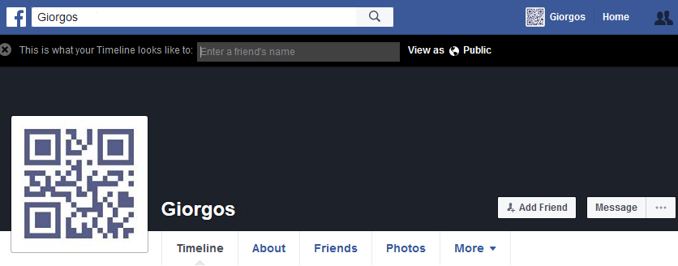
Examining the activity log
Blocking other users
View profile as
Applications
Blocking other users
Facebook also allows users to protect their privacy by selecting who may contact them. As shown on the following
figure, the two options are 'everyone' and 'friends of friends'.
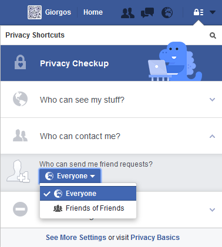
Moreover, users can opt for completely ignoring specific users, as shown on the following figure.
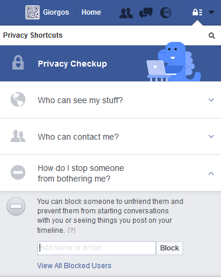
View profile as
Applications
Blocking other users
Final guidelines
Applications
Facebook applications, like Databait, obtain access to your Facebook data. That is, when the application is
approved by the user, the user grants access rights to the application and the application can then retrieve
data related to the user directly from Facebook. The particular access rights obtained by the application
determine exactly which data the application can retrieve, e.g. the list of friends, posts, etc. In some cases,
the application also has the right to post on the user's profile.
In some cases, applications may be a major threat for the disclosure of personal information. It is not unusual
that an application is installed and obtains access to the user's data without the user realizing it. This may
happen for instance with some sort of phishing, where the user simply clicks on a random link or button that
resembles a like button.
It is advisable that users regularly check the list of their applications and examine the access rights that the
applications have. In order to do this, click on 'Apps' on the column on the left of your news-feed and then
click on settings. This will show a list of applications similar to that in the figure below.
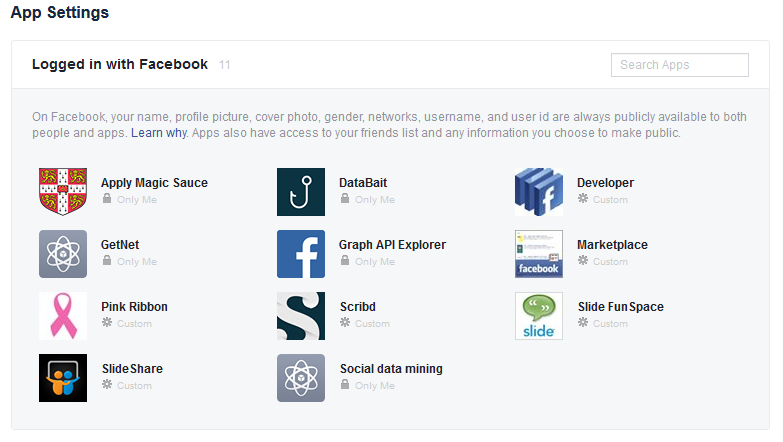
When you put your mouse over an application, you will see an 'Edit Settings' button. Clicking on it you will see
the details of the application and the access rights that it has, just like in the figure below.
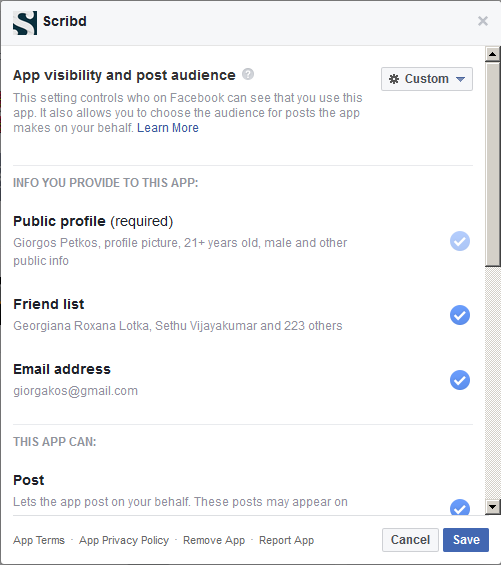
Regardless of any changes to the settings of an application though, it is important to keep in mind that once an
application gets access to your data, it is unclear what happens with it and control over it may be permanently
lost. For instance, please see the following message that is displayed when removing an application.
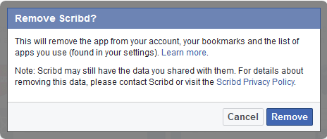
Blocking other users
Final guidelines
Applications
Final guidelines
This tutorial concludes with a list of some guidelines that should be kept in mind with respect to information
disclosure in the social networks:
- Institutional privacy, that is, the disclosure of information to the social network service
should not be overlooked. It is not always clear how the social network handles the data.
- Once some content is posted, complete control over it is lost. It is not clear whether the social
network ever actually deletes any content, regardless of the fact that you may have deleted it from
your profile. This poses further concerns about institutional privacy.
- Moreover, once some content is posted, it may very easily be shared or copied by other users,
thus reducing the amount of control that the user has over the content.
- Inferred data is important. More things may be disclosed than one may first think. In addition,
the social network can produce very elaborate inferences as it has in its disposal a huge amount of
data.
- Content posted about you from other users, incidental data, may reveal a lot about you. In some
cases, the user can delete the content (if it is posted in their own profile) or untag themselves. It is
important for users to keep track of notifications about other people tagging them and carefully
examining posts by other users on their profiles.
- Applications are a major source of information leak. Users should regularly examine the
applications that they are using and the access rights that they have.
- It is important to be comfortable with the privacy tools offered by the social network. Often
the tools or settings may change without much notice and the user should be constantly try to follow any
changes.
- Take advantage of third party tools, like Databait, that can help you to better control the
disclosure of your information!
Applications
×